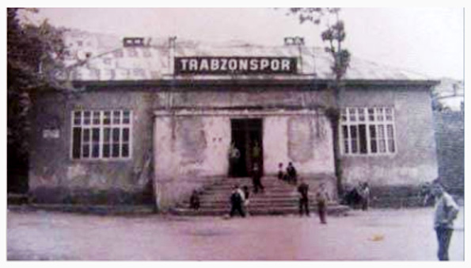

Futbol A Takımı Kadromuz
Başarılarımız
Stadyumumuz

Trabzonspor (futbol takımı), 2 Ağustos 1967 yılında Trabzon merkezli kurulan ve Süper Lig'de mücadele eden Trabzonspor kulübünün futbol takımıdır. Maçlarını 2016 yılına kadar 24.169 kapasiteli Hüseyin Avni Aker Stadyumu'nda oynamıştır. 2016 yılının son ayında ise yeni yapılan stadyuma taşınmıştır. Renkleri kulübün tüm branşlarda ortak olarak kullandığı, koyu bordo ve açık mavidir. Trabzonspor Futbol Takımı, Süper Lig'de şampiyon olmuş İstanbul dışındaki ilk takımdır ve şampiyon olmayı başarmış altı takımdan biridir. Ayrıca, kazandığı yedi şampiyonlukla; armasında yıldız bulunan dört takımdan biridir. Takımın forma üreticisi Joma'dır. Takımın maçlarını oynadığı stadyum, Şenol Güneş Spor Kompleksi'dir. Trabzonspor toplamda 7 Süper Lig, 9 Türkiye Kupası, 10 Süper Kupası, 5 Başbakanlık Kupası ve bir de 1. Lig kupası şampiyonluğu bulunmaktadır. 1974 yılında Kıbrıs Harekâtı sırasında, Kıbrıs'taki askerlerin motivasyonunu yükseltmek amacıyla düzenlenen futbol turnuvasında şampiyon olmuş ve Kıbrıs Barış Kupasını müzesine götürmüştür.